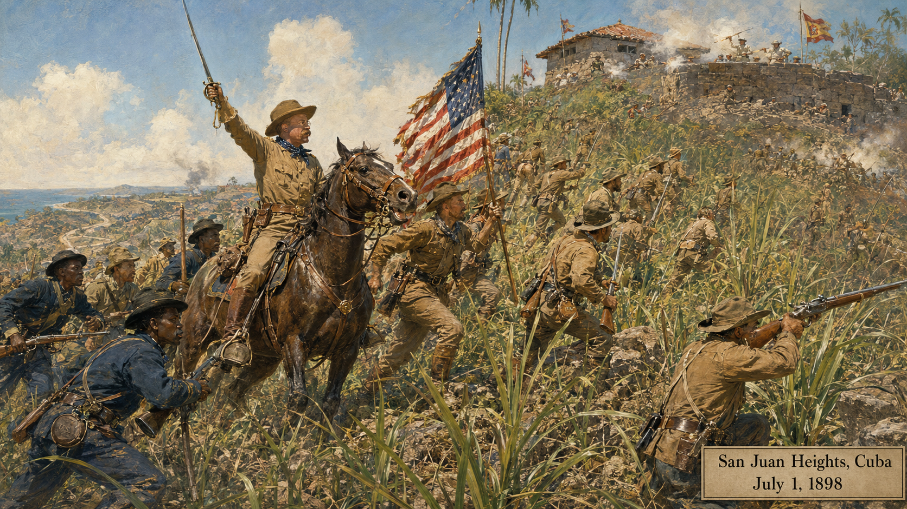

U.S. Imperialism and World War I (1898–1920)¶
Summary¶
This chapter traces the United States' emergence as a global power, from the Spanish-American War and the acquisition of an overseas empire through America's entry into World War I, the mobilization of the home front, and the ultimate failure of Wilson's vision for a new world order. Along the way, it develops two critical analytical skills: identifying propaganda techniques and recognizing historical myths — the gap between what actually happened and what later generations came to believe.
Concepts Covered¶
This chapter covers the following 24 concepts from the learning graph:
- Spanish-American War
- USS Maine Incident
- Treaty of Paris 1898
- Philippines Acquisition
- Anti-Imperialist League
- Panama Canal
- Roosevelt Corollary
- Dollar Diplomacy
- Woodrow Wilson
- World War I Causes
- Zimmermann Telegram
- U.S. Entry into WWI
- Selective Service Act
- Home Front Mobilization (WWI)
- Committee on Public Information
- Espionage and Sedition Acts
- Fourteen Points
- Treaty of Versailles
- Senate Rejection of League of Nations
- Red Scare (First)
- Palmer Raids
- Propaganda Analysis
- Propaganda Techniques
- Historical Myths
Prerequisites¶
This chapter builds on concepts from: - Chapter 12: The Progressive Era
From continent to empire
 Welcome to Chapter 13! In less than two decades, the United States transformed from a continental republic still absorbing the lessons of Reconstruction into the decisive military power of the 20th century. That transformation came at a cost — an overseas empire built on contradictions, a world war that reshaped the planet, and a peace settlement that planted the seeds of the next catastrophe. Two skills will serve you especially well here: propaganda analysis (essential for wartime societies that manufacture consent) and historical myth identification (essential for any student of WWI, which has been mythologized more than almost any other event). Let's investigate the evidence!
Welcome to Chapter 13! In less than two decades, the United States transformed from a continental republic still absorbing the lessons of Reconstruction into the decisive military power of the 20th century. That transformation came at a cost — an overseas empire built on contradictions, a world war that reshaped the planet, and a peace settlement that planted the seeds of the next catastrophe. Two skills will serve you especially well here: propaganda analysis (essential for wartime societies that manufacture consent) and historical myth identification (essential for any student of WWI, which has been mythologized more than almost any other event). Let's investigate the evidence!
Part 1: The Spanish-American War and America's Empire¶
The Road to 1898¶
The United States had long debated whether to acquire overseas territories. By the 1890s, several converging pressures pushed the country toward empire: the closing of the frontier (as Frederick Jackson Turner had warned in 1893), competition with European powers who were carving up Africa and Asia, the influence of naval theorist Alfred Thayer Mahan (who argued in The Influence of Sea Power upon History that national greatness required a powerful navy and overseas bases), and the commercial ambitions of American businesses seeking new markets.
Cuba provided the flashpoint. Since the 1880s, Cuba had been struggling against Spanish colonial rule, and American newspapers — particularly the "yellow press" empires of William Randolph Hearst and Joseph Pulitzer — had been covering Cuban suffering in sensationalized stories designed to sell papers and build public outrage.
The USS Maine Incident¶
{kind=link}
On February 15, 1898, the USS Maine, an American battleship sent to Havana Harbor ostensibly to protect American citizens and property, exploded and sank, killing 266 sailors. The cause was immediately contested. American newspapers, led by Hearst's New York Journal, blamed Spanish sabotage: "Remember the Maine! To hell with Spain!" became a national rallying cry.
The USS Maine incident is a case study in how a single ambiguous event can be weaponized to build public support for war. Later investigations (including a 1974 Navy inquiry) suggested the explosion was most likely caused by a fire in the coal bunker that ignited the ship's forward magazine — an accident, not Spanish sabotage. But in 1898, the explosion became the emotional trigger that made the Spanish-American War politically possible.
Apply sourcing to the Maine coverage: Hearst's papers had a financial interest in selling sensationalized war coverage. "Remember the Maine" was a propagandistic frame that assumed guilt before investigation. The lesson is not that the Spanish-American War was fabricated from nothing — Cuba's colonial suffering was real — but that the specific trigger event was far more ambiguous than the public understood.
The Spanish-American War¶
The Spanish-American War (April–August 1898) lasted only 113 days and produced a decisive American victory. Secretary of State John Hay called it "a splendid little war" — a description that, as we will see, concealed uncomfortable questions.
The war had two theaters. 
{kind=link}
In Cuba, Theodore Roosevelt's "Rough Riders" (the 1st United States Volunteer Cavalry) charged up San Juan Hill — one of the most heavily mythologized moments in American military history. The actual assault involved thousands of soldiers, including the Buffalo Soldiers of the 9th and 10th Cavalry (Black regiments whose role was systematically downplayed in the popular narrative). In the Pacific, Commodore George Dewey destroyed the Spanish fleet in Manila Bay in a single morning, with the loss of one American sailor.
Treaty of Paris 1898 and Philippines Acquisition¶
The Treaty of Paris (1898) ended the war and transferred Guam, Puerto Rico, and — for $20 million — the Philippines from Spain to the United States. The Philippines acquisition created an immediate moral and political crisis.
The United States had gone to war ostensibly to liberate Cuba from colonial oppression. Now it had acquired its own colonial possession — a archipelago of 7,000 islands and 7 million people who had not been consulted about their transfer from one empire to another. Filipino independence fighters, led by Emilio Aguinaldo, who had fought alongside Americans against Spain, now turned their weapons against their new occupiers. The Philippine-American War (1899–1902) was bloodier than the Spanish-American War — 4,200 American deaths and an estimated 200,000–600,000 Filipino deaths (many from disease and the scorched-earth tactics used to suppress the insurgency).
The 'liberation' contradiction
 The Philippines acquisition illustrates a recurring tension in American foreign policy: the gap between stated ideals (liberation, democracy, self-determination) and actual outcomes (colonial control). Apply the tool of historical comparison: how is U.S. control of the Philippines different from Spanish control of Cuba? What would make the difference morally significant, if anything? The Anti-Imperialist League — which included Mark Twain, Andrew Carnegie, and former President Grover Cleveland — asked precisely this question and concluded that the United States had betrayed its founding principles. Their arguments are worth reading on their merits, not just as historical curiosities.
The Philippines acquisition illustrates a recurring tension in American foreign policy: the gap between stated ideals (liberation, democracy, self-determination) and actual outcomes (colonial control). Apply the tool of historical comparison: how is U.S. control of the Philippines different from Spanish control of Cuba? What would make the difference morally significant, if anything? The Anti-Imperialist League — which included Mark Twain, Andrew Carnegie, and former President Grover Cleveland — asked precisely this question and concluded that the United States had betrayed its founding principles. Their arguments are worth reading on their merits, not just as historical curiosities.
The Anti-Imperialist League¶
The Anti-Imperialist League (founded 1898) opposed U.S. annexation of the Philippines on both principled and practical grounds. Their principled argument: a republic founded on the consent of the governed could not legitimately govern millions of people without their consent. Their practical argument: governing a distant, culturally different population required the kind of standing military establishment that the founders had warned against, and would corrupt American democracy at home.
The Anti-Imperialist League lost the political debate — the Philippines were retained — but their arguments illuminate the genuine tension between American democratic ideals and imperial ambition that would recur throughout the 20th century.
Part 2: The Roosevelt and Taft Doctrines¶
The Panama Canal¶
{kind=link}
The Panama Canal (completed 1914) was Theodore Roosevelt's most concrete achievement in foreign policy. A canal across the Central American isthmus had been a strategic dream since the 1840s — it would allow the U.S. Navy to move rapidly between Atlantic and Pacific without the long voyage around South America. The problem was that the isthmus ran through Colombia, which refused to grant the United States a canal zone on acceptable terms.
Roosevelt's solution was to support a Panamanian independence movement (which the United States recognized within hours), send the U.S. Navy to prevent Colombia from suppressing the revolt, and negotiate a canal treaty with the new Panamanian government. Roosevelt later said, with characteristic candor: "I took the Canal Zone and let Congress debate." The canal, built at a cost of $375 million and the lives of an estimated 5,600 workers (mostly from the Caribbean), opened in 1914.
Roosevelt Corollary and Dollar Diplomacy¶
The Roosevelt Corollary to the Monroe Doctrine (1904) declared that the United States had the right to intervene in Latin American nations to stabilize their finances and prevent European powers from using unpaid debts as a pretext for intervention. It was a frank assertion of hemispheric dominance — the United States as the regional policeman.
The Roosevelt Corollary established a pattern: U.S. intervention in Caribbean and Central American nations (Cuba, Haiti, Nicaragua, Dominican Republic) would recur throughout the 20th century. Each intervention was justified by immediate circumstances; taken together, they constituted an informal empire in the Western Hemisphere.
Dollar Diplomacy, Taft's version (1909–1913), pursued the same goals through economic rather than military means: encouraging American banks to make loans to Caribbean and Latin American nations, thereby giving the United States financial leverage without the political cost of military occupation. The distinction between dollar diplomacy and gunboat diplomacy was often academic — when borrowers defaulted, the Marines tended to follow.
Part 3: World War I¶
Woodrow Wilson and the War He Didn't Want¶
Woodrow Wilson won the presidency in 1912 and 1916. A former Princeton president and New Jersey governor, Wilson was the most intellectually sophisticated president of the Progressive Era — and the most moralistic. His foreign policy was driven by a conviction that American democratic principles were universally applicable and that the United States had a special mission to spread them.
{kind=link}
When World War I broke out in Europe in August 1914, Wilson declared American neutrality. His position was both principled (the United States had no treaty obligations) and politically necessary (the country had large German-American and Irish-American communities with no desire to fight alongside Britain). He won re-election in 1916 partly on the slogan "He kept us out of war."
World War I Causes¶
The causes of World War I are complex — complex enough that historians continue to debate them a century later. The standard framework identifies four underlying causes (MAIN): militarism (European powers' massive arms buildup), alliances (the interlocking treaty system that turned a regional conflict into a continental war), imperialism (competition for colonies), and nationalism (both the aggressive nationalism of great powers and the destabilizing nationalism of subject peoples in the Austro-Hungarian and Ottoman empires).
The triggering event was the assassination of Archduke Franz Ferdinand of Austria-Hungary in Sarajevo on June 28, 1914, by Gavrilo Princip, a Bosnian Serb nationalist. The alliance system then activated like a chain reaction: Austria-Hungary declared war on Serbia; Russia mobilized to defend Serbia; Germany declared war on Russia and France; Germany invaded Belgium (triggering Britain's treaty obligation to defend Belgian neutrality); Britain declared war on Germany.
The United States remained neutral for nearly three years, but maintaining true neutrality proved impossible. American banks lent billions to the Allies; American factories supplied Allied munitions. German submarine warfare — which Germany used to counter British naval blockade — threatened American ships and lives.
The Zimmermann Telegram¶
In January 1917, British intelligence intercepted and decoded the Zimmermann Telegram — a message from German Foreign Secretary Arthur Zimmermann to the German ambassador in Mexico. Zimmermann proposed that if the United States entered the war, Germany would support Mexico in recovering Texas, New Mexico, and Arizona. The British shared the decoded telegram with the Wilson administration, who released it to the press.
The Zimmermann Telegram is one of the most significant intelligence coups in history — and a masterclass in strategic communication. The British timed its release carefully to maximize its impact on American public opinion at precisely the moment Wilson was moving toward requesting a declaration of war.
U.S. Entry into WWI¶
U.S. entry into World War I came on April 6, 1917, when Congress declared war on Germany. The immediate triggers were the resumption of unrestricted submarine warfare (Germany had promised to restrict it in 1916, then abandoned the restriction in February 1917) and the Zimmermann Telegram. Wilson's war message reframed American intervention in idealistic terms: "The world must be made safe for democracy." This was not a war of national interest but a crusade — a framing with significant consequences for the peace negotiations.
Diagram: WWI Decision Tree — From Assassination to American Entry¶
WWI Decision Tree — Interactive Cause-and-Effect Chain
Type: decision-tree
sim-id: wwi-decision-tree
Library: p5.js
Status: Specified
Purpose: Allow students to trace the causal chain from the Sarajevo assassination (June 1914) through American entry (April 1917), clicking through each major decision point to understand why each step led to the next.
Bloom Level: Analyze (L4) Bloom Verb: Trace
Learning Objective: Students trace the causal chain from the assassination of Archduke Franz Ferdinand to U.S. declaration of war, identifying which steps were contingent (could have gone otherwise) and which were highly determined by prior commitments.
Canvas layout: - Responsive width; height approximately 480px - Vertical timeline with branching decision nodes - Each node shows: event, date, key decision-maker, and the choice made - Color-coded by actor: Austria-Hungary (gold), Germany (gray), Russia (red), Britain (blue), France (teal), US (navy)
Nodes in sequence: 1. Sarajevo Assassination (June 28, 1914) → Austria issues ultimatum to Serbia 2. Serbia's partial acceptance → Austria declares war anyway (July 28) 3. Russia mobilizes → Germany declares war on Russia (Aug 1) 4. Germany declares war on France → invades Belgium (Aug 3–4) 5. Britain declares war on Germany (Aug 4) — treaty obligation to Belgium 6. US declares neutrality (Aug 4, 1914) 7. Lusitania sinking (May 1915) → Wilson protests; Germany promises Sussex Pledge 8. Germany resumes unrestricted submarine warfare (Feb 1, 1917) 9. Zimmermann Telegram revealed (March 1, 1917) 10. US declares war on Germany (April 6, 1917)
Interactivity: - Clicking each node opens a detail panel: what happened, why, and what alternatives existed - "Counterfactual" button on each node asks: "What if this had gone differently?" and shows a 1-sentence alternative history - Zoom controls for the full timeline
Color scheme: Actor colors above; contingent decisions highlighted in amber.
Part 4: The Home Front and Civil Liberties¶
Selective Service Act and Mobilization¶
The Selective Service Act (1917) established a military draft — the first since the Civil War's controversial conscription. Unlike the Civil War draft (which allowed wealthy men to pay substitutes), the 1917 draft was designed to be more equitable, though in practice it still reflected racial hierarchies: Black soldiers were drafted into segregated units, usually under white officers, and often assigned labor rather than combat duties.
Home front mobilization (WWI) was unprecedented in scale. The War Industries Board coordinated industrial production; the Food Administration (headed by Herbert Hoover) managed food distribution; the War Finance Corporation sold Liberty Bonds to finance the war. For the first time, the federal government exercised systematic control over the entire American economy — a preview of the emergency governance that would be revived in the New Deal.
Women entered the industrial workforce in large numbers, replacing men who had enlisted, and the labor shortage gave them bargaining power they had not previously held. The war contributed to the accelerating movement for women's suffrage (ratified in 1920 as the 19th Amendment).
Committee on Public Information and Propaganda¶
{kind=link}
The Committee on Public Information (CPI), headed by journalist George Creel, was established by Wilson to build public support for the war. It was the United States government's first systematic propaganda operation — and an extraordinarily effective one.
The CPI deployed every available medium: posters, films, speakers (the "Four Minute Men" who delivered patriotic speeches at movie theaters), newspaper releases, and school curricula. Its message was simple and powerful: the war was a crusade for democracy against German militarism; Americans who questioned the war were either naive or disloyal.
Before examining propaganda techniques directly, two concepts need definition. Propaganda is communication that aims to influence attitudes or behavior by appealing to emotion rather than evidence and by presenting a one-sided view. Techniques are the specific methods through which propaganda works. The most common techniques include:
| Technique | Definition | WWI Example |
|---|---|---|
| Appeal to fear | Emphasizing threatening consequences to motivate compliance | "The Hun" poster imagery of German soldiers as bestial monsters |
| Bandwagon | Suggesting that "everyone" is doing/believing something | "Four-Minute Men" depicting universal American support for the war |
| Name-calling | Attaching negative labels to opponents | Renaming sauerkraut "liberty cabbage," dachshunds "liberty pups" |
| Glittering generalities | Using vague, emotionally positive terms without specifics | "Making the world safe for democracy" |
| Transfer | Associating a cause with a respected symbol | Uncle Sam recruitment posters, Liberty Bond imagery |
| Plain folks | Presenting leaders as ordinary people to build trust | Wilson's appeal to American families |
Understanding these techniques is not an academic exercise — it is a survival skill for democratic citizenship. The same techniques used by the CPI in 1917 appear in modern political advertising, social media campaigns, and corporate communications.
The First Red Scare: when propaganda turns inward
 Wartime propaganda has a dangerous tendency to outlast the war — and to turn against domestic targets. The Committee on Public Information created an atmosphere in which questioning the war was treated as disloyalty or pro-German sympathy. That atmosphere made the Espionage and Sedition Acts politically possible, and the habit of treating political dissent as dangerous subversion fed directly into the First Red Scare of 1919–1920. Watch for this pattern: emergency powers justified by external threats that are then applied to internal political opponents. It is one of the most reliable warning signs of democratic backsliding in any era.
Wartime propaganda has a dangerous tendency to outlast the war — and to turn against domestic targets. The Committee on Public Information created an atmosphere in which questioning the war was treated as disloyalty or pro-German sympathy. That atmosphere made the Espionage and Sedition Acts politically possible, and the habit of treating political dissent as dangerous subversion fed directly into the First Red Scare of 1919–1920. Watch for this pattern: emergency powers justified by external threats that are then applied to internal political opponents. It is one of the most reliable warning signs of democratic backsliding in any era.
Espionage and Sedition Acts¶
The Espionage Act (1917) and Sedition Act (1918) criminalized interference with military recruitment and, more broadly, any "disloyal, profane, scurrilous, or abusive language" about the government, the flag, or the military. Socialist leader Eugene Debs was sentenced to ten years in prison for an antiwar speech. Nearly 2,000 people were prosecuted; hundreds were imprisoned.
The Supreme Court upheld the acts in Schenck v. United States (1919), where Justice Oliver Wendell Holmes wrote the famous "clear and present danger" test — speech could be restricted if it presented a "clear and present danger" of producing evils that Congress had the right to prevent. Holmes' own metaphor ("falsely shouting fire in a crowded theater") was designed to illustrate the limits of free speech, but the broad principle he applied authorized substantial suppression of antiwar dissent.
Part 5: Wilson's Vision and Its Collapse¶
The Fourteen Points¶
Wilson's Fourteen Points (January 1918) were his vision for the peace — an idealistic framework intended to replace the old European system of secret diplomacy, colonial competition, and balance-of-power politics with a new order based on self-determination, open diplomacy, free trade, and collective security through a League of Nations.
The Fourteen Points included: - Open covenants of peace, openly arrived at (no secret treaties) - Freedom of navigation on the seas - Removal of trade barriers - Reduction of armaments - Self-determination for the peoples of Austria-Hungary and the Ottoman Empire - A general association of nations (the League of Nations)
Wilson arrived at the Paris Peace Conference as a genuine hero to the war-weary peoples of Europe, who believed he would impose a just and lasting peace. What followed was one of the more dramatic political disappointments in modern history.
Treaty of Versailles¶
{kind=link}
The Treaty of Versailles (1919) was the peace settlement with Germany — and it bore little resemblance to the Fourteen Points. Britain (Lloyd George) and France (Clemenceau) wanted to punish Germany for the war, extract reparations, and prevent German recovery. The treaty imposed the "war guilt clause" (Article 231), which held Germany solely responsible for the war; demanded reparations of 132 billion gold marks; stripped Germany of territory; and limited the German military.
Wilson won his League of Nations but had to sacrifice most of his other principles to get it. Germany was excluded from the league; colonial peoples whose "self-determination" Wilson had promised remained under European colonial rule; secret treaties were honored. The treaty that emerged was, as John Maynard Keynes predicted in The Economic Consequences of the Peace, sufficiently punitive to devastate the German economy and humiliate the German people — without being sufficiently comprehensive to prevent Germany's eventual recovery and revanche.
Diagram: Treaty of Versailles — Fourteen Points vs. Actual Outcome¶
Versailles Comparison — Fourteen Points vs. Final Treaty
Type: comparison
sim-id: versailles-comparison
Library: p5.js
Status: Specified
Purpose: Allow students to compare Wilson's Fourteen Points with the actual Treaty of Versailles provisions, identifying which points were honored, which were modified, and which were abandoned.
Bloom Level: Evaluate (L5) Bloom Verb: Compare
Learning Objective: Students evaluate the extent to which the Treaty of Versailles fulfilled Wilson's Fourteen Points, and assess what the gap between promise and outcome reveals about the constraints on idealistic diplomacy.
Canvas layout: - Responsive width; height approximately 480px - Two-column layout: "Fourteen Points" (left) and "Treaty of Versailles" (right) - Each of the 14 points shown as a clickable card - Color-coded outcome badge: green (honored), amber (modified), red (abandoned/reversed)
Point outcomes: 1. Open covenants → Partially: League of Nations exists but compromised | amber 2. Freedom of seas → Abandoned: British naval supremacy maintained | red 3. Free trade → Largely abandoned: protective tariffs retained | red 4. Arms reduction → Partially: only Germany disarmed | amber 5–13. Self-determination → Mixed: some new nations created; colonial peoples ignored | amber 14. League of Nations → Created but US never joined | amber (ironic)
War Guilt clause (not in 14 Points) → Added by France and Britain over Wilson's objection
Interactivity: - Clicking a point shows: original text, actual treaty provision, why it was compromised (which power objected and why), and a "historical verdict" on its long-term impact - Summary bar at bottom shows: 0 fully honored, 8 partially honored, 6 abandoned - "What if?" mode: slider allows exploring counterfactual "what if the US had joined the League?"
Color scheme: Blue/green for Fourteen Points; gold/red for treaty provisions; amber for compromises.
Senate Rejection of League of Nations¶
Woodrow Wilson returned to the United States with a treaty he had compromised his principles to obtain — and then watched it die in the Senate. The Senate rejection of the League of Nations (1919–1920) was the final irony of Wilson's foreign policy.
Senate opposition came in two camps: "Reservationists" led by Henry Cabot Lodge who wanted amendments protecting U.S. sovereignty, and "Irreconcilables" who opposed any American involvement in European collective security. Wilson, characteristically, refused to compromise — he insisted the treaty be accepted as written or not at all. He took his case to the American people in a grueling national tour, collapsed from exhaustion, suffered a severe stroke, and was incapacitated for the rest of his presidency.
The treaty failed twice in Senate votes (November 1919 and March 1920). The United States never joined the League of Nations — the institution Wilson had spent his political capital to create. The League survived, weakened by American absence, until World War II rendered it obsolete.
Part 6: The Red Scare and Historical Myths¶
The First Red Scare and Palmer Raids¶
The First Red Scare (1919–1920) was a period of intense fear about Communist and anarchist subversion following the Bolshevik Revolution in Russia (1917) and a wave of anarchist bombings in the United States. It illustrates how wartime propaganda habits — treating political dissent as subversion — persisted after the armistice.
Attorney General A. Mitchell Palmer authorized the Palmer Raids: mass arrests (often without warrants) of suspected Communists, anarchists, and labor organizers. In January 1920 alone, over 6,000 people were arrested in simultaneous raids across 33 cities. Many were immigrants; hundreds were deported. Civil liberties — due process, free speech, freedom of association — were systematically violated.
The Palmer Raids ended not because the government had second thoughts but because Palmer's apocalyptic predictions of a Communist revolution failed to materialize. By mid-1920, public opinion had shifted, and Palmer's alarmism was discredited. The episode demonstrates how quickly emergency powers, once established, can be turned against political minorities — and how quickly public opinion can shift once the panic subsides.
Historical Myths¶
A historical myth is a version of past events that has become widely accepted despite contradicting the historical evidence. Myths are not simply errors — they serve social and political functions, and they are actively maintained by communities that benefit from them.
WWI produced several durable historical myths. The "stab-in-the-back" myth in Germany held that the German army had not been defeated militarily but had been betrayed by civilian politicians (and, in the Nazi version, by Jews). This myth was demonstrably false — Germany's military position in the autumn of 1918 was hopeless — but it served to explain defeat without acknowledging military failure, and it provided political fuel for the Nazi movement.
In the United States, the myth that the war was caused by Wilsonian idealism and that the United States had been manipulated into the war by British propaganda and munitions manufacturers (the "merchants of death" thesis) became influential in the 1930s, driving isolationist sentiment and shaping neutrality legislation that initially constrained Roosevelt's response to Nazi aggression.
Propaganda analysis: applying lateral reading to WWI
Apply lateral reading to Committee on Public Information materials. When you encounter a CPI poster or pamphlet, ask: Who created it? What was their institutional purpose? What emotions does it target? What information does it omit? What action does it seek? Then cross-reference: what do primary sources from German Americans, pacifists, or socialists say about the same events? The CPI's materials are not false in the sense of making up events — they are selective, emotionally loaded, and designed to preclude alternative interpretations. That is what makes them effective, and that is exactly what makes them worth analyzing carefully.
Spotting historical myths
 Three questions help identify a historical myth: (1) Who benefits? Myths serve someone's political or psychological needs — identify who. (2) What evidence contradicts it? Real history always has contrary evidence; a myth either ignores it or explains it away. (3) When did this version emerge? Myths often develop well after the events they describe, as later generations reshape the past to fit present needs. The "stab-in-the-back" myth emerged in 1919, not during the war. The "merchants of death" thesis peaked in the 1930s. Timing reveals function.
Three questions help identify a historical myth: (1) Who benefits? Myths serve someone's political or psychological needs — identify who. (2) What evidence contradicts it? Real history always has contrary evidence; a myth either ignores it or explains it away. (3) When did this version emerge? Myths often develop well after the events they describe, as later generations reshape the past to fit present needs. The "stab-in-the-back" myth emerged in 1919, not during the war. The "merchants of death" thesis peaked in the 1930s. Timing reveals function.
Summary¶
Between 1898 and 1920, the United States moved from continental republic to global power — acquiring an overseas empire, building the Panama Canal, intervening repeatedly in Latin America, and entering the world war that reshuffled the global order. The arc from the USS Maine to the Senate rejection of the League of Nations illustrates a recurring American foreign policy tension: between idealism (liberation, self-determination, democracy) and interest (trade, strategic position, hemispheric dominance).
The home front of World War I demonstrated the capacity of modern governments to mobilize public opinion through systematic propaganda — and the civil liberties costs that mobilization can impose. The First Red Scare showed how emergency powers outlast their emergencies. And the failure of Wilson's Fourteen Points demonstrated the limits of idealism in a world of competing national interests.
Two analytical tools developed in this chapter — propaganda analysis and historical myth identification — are not period-specific. They apply to every subsequent era of American history, and to the present.
Knowledge Check 1 — Click to reveal
Question: Apply propaganda analysis to the Committee on Public Information's "Four Minute Men" program. Which propaganda techniques did it use, and why were those specific techniques well-suited to movie-theater audiences in 1917?
Answer: The Four Minute Men used several interlocking techniques. Bandwagon: delivered in a communal setting (movie theater) where the audience could physically see that they were surrounded by fellow Americans, reinforcing the impression that support for the war was universal. Plain folks: speakers were local community members, not government officials, making the message feel like neighbor-to-neighbor communication rather than top-down propaganda. Transfer: associating the cause with respected community figures and the symbols of American patriotism. Appeal to fear: emphasizing the threat of German militarism to American families. The movie-theater setting was ideal because it captured a captive, entertainment-primed audience whose critical defenses were lowered (they came to be entertained, not to evaluate arguments) and because the communal experience suppressed dissent (disagreeing in that crowd would have been socially costly).
Knowledge Check 2 — Click to reveal
Question: Apply the three-question test for historical myths to the "stab-in-the-back" myth (Dolchstoßlegende) that emerged in Germany after WWI.
Answer: (1) Who benefits? The myth benefited German military leaders (especially Ludendorff) who had presided over the actual defeat — it transferred blame to civilians and politicians, protecting military reputations. It also benefited right-wing nationalist movements who wanted to delegitimize the Weimar Republic's civilian government. (2) What evidence contradicts it? Germany's military position in autumn 1918 was objectively hopeless: the Hindenburg Line had been broken, the army was in strategic retreat, American troops were pouring into France at 10,000 per day, Germany's allies were collapsing, and Ludendorff himself had told the Kaiser in September 1918 that the war was lost. The civilian government asked for armistice terms because the military told them to — the opposite of the myth's claim. (3) When did this version emerge? The myth emerged in late 1919, more than a year after the armistice, not during the war. Timing reveals function: it was constructed after the defeat to explain it away, not an account that contemporaries developed as events unfolded.
Chapter 13 Complete!
 You've navigated the United States' turbulent entry into global power — an overseas empire built on contradictions, a war fought in the name of democracy that produced both civil liberties violations at home and a punitive peace that planted seeds for the next catastrophe. You've also added two powerful analytical tools to your kit: propaganda analysis and historical myth identification. Both will serve you for every chapter that follows. In Chapter 14, the 1920s bring jazz, flappers, and Prohibition — and then the stock market crash that changes everything.
You've navigated the United States' turbulent entry into global power — an overseas empire built on contradictions, a war fought in the name of democracy that produced both civil liberties violations at home and a punitive peace that planted seeds for the next catastrophe. You've also added two powerful analytical tools to your kit: propaganda analysis and historical myth identification. Both will serve you for every chapter that follows. In Chapter 14, the 1920s bring jazz, flappers, and Prohibition — and then the stock market crash that changes everything.